Первым делом вы узнаете про горячие клавиши, которые помогут вам ускорить работу с текстом. Что такое горячие клавиши? Это сочетания клавиш на клавиатуре, которые позволяют быстро копировать и вставлять текст, выделять или переносить.
Примечания: Знак "плюс" (+) в сочетании клавиш означает, что одновременно необходимо нажать несколько клавиш. Знак запятой (,) в сочетании клавиш означает, что необходимо нажимать несколько клавиш по порядку.
Вот самые ходовые как для Excel, так и для других программ:
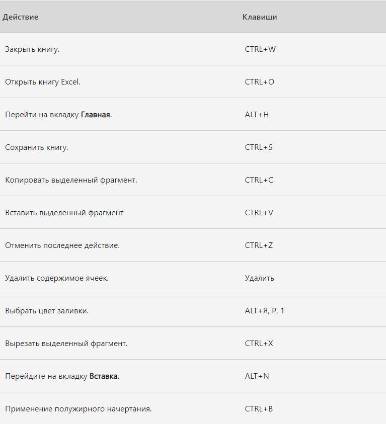
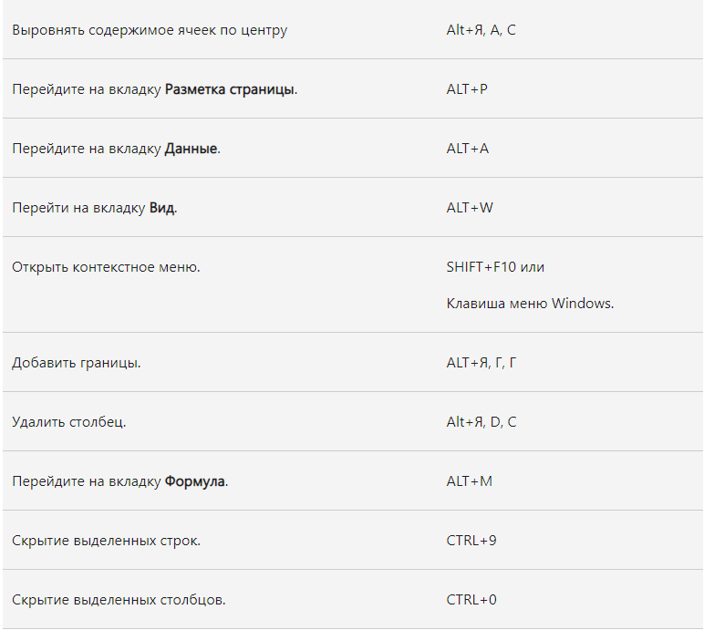
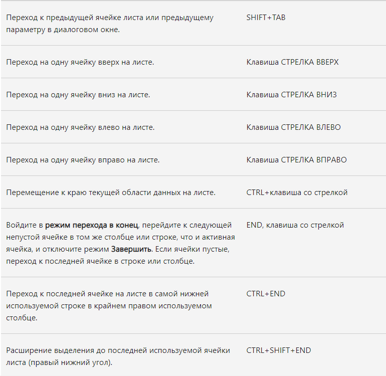
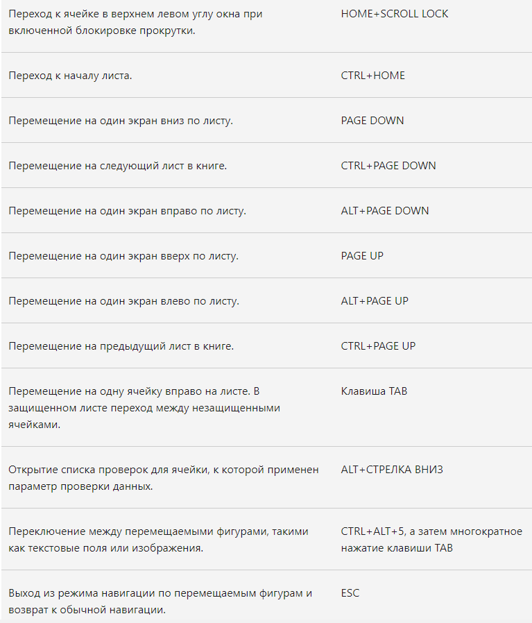
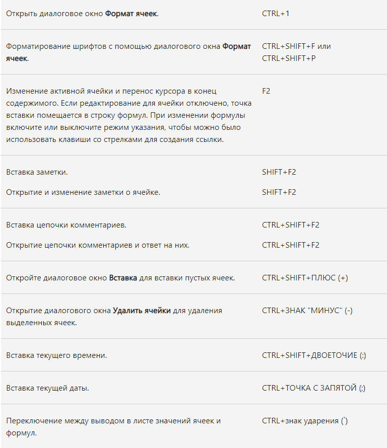
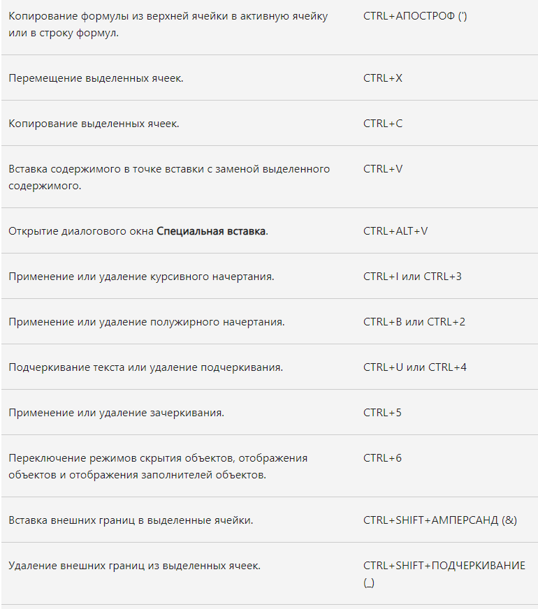
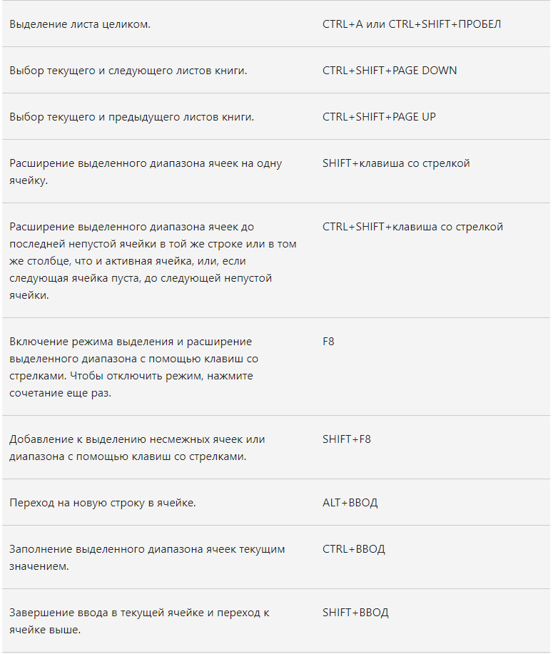
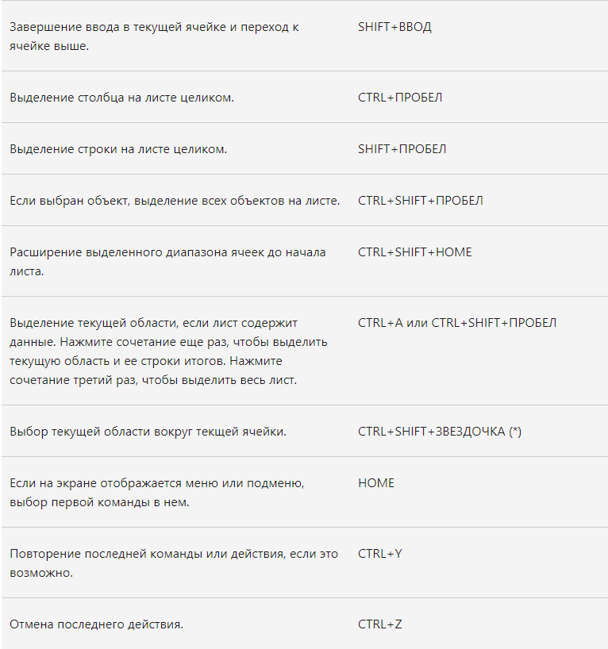
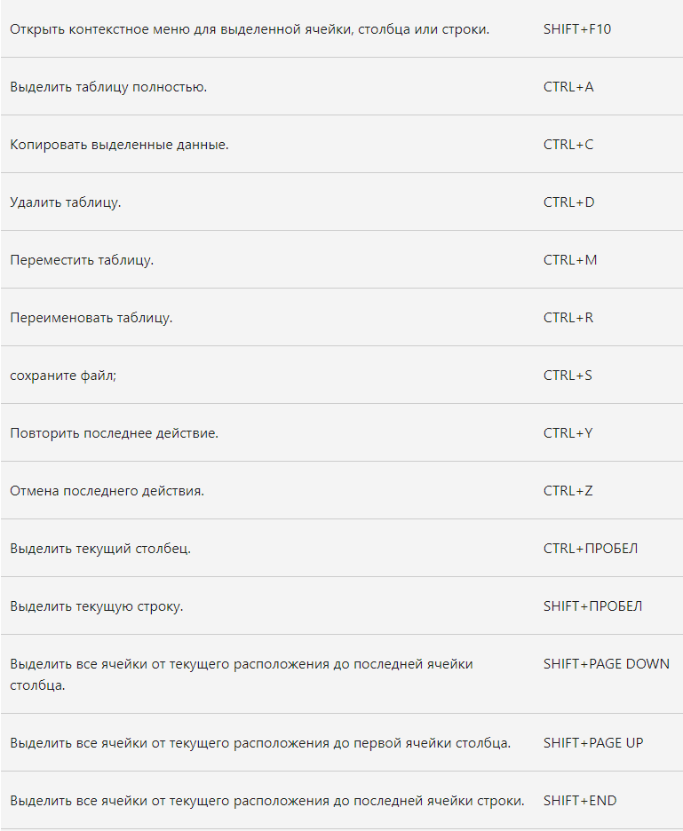
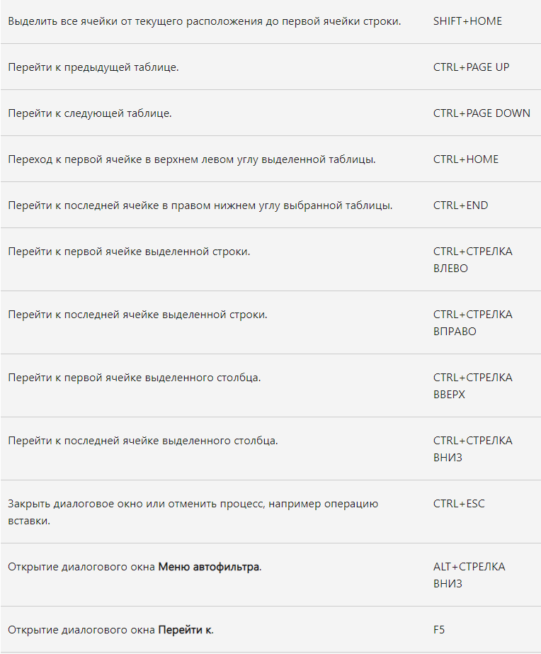
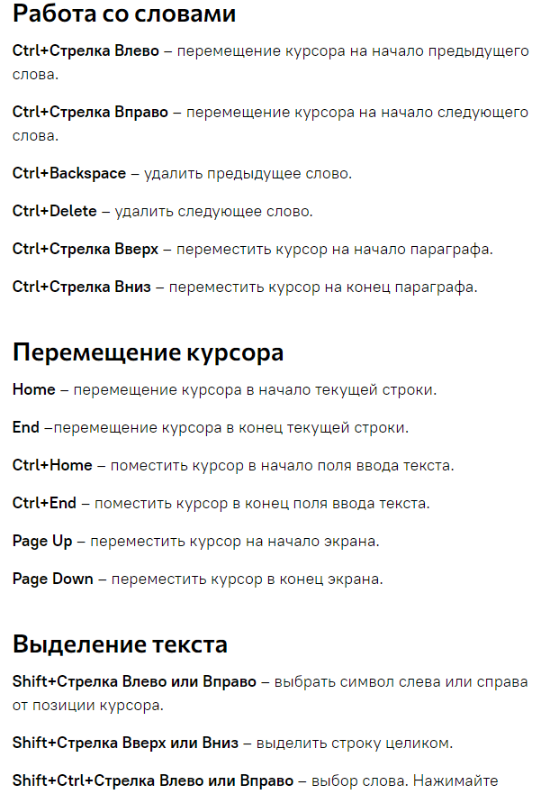
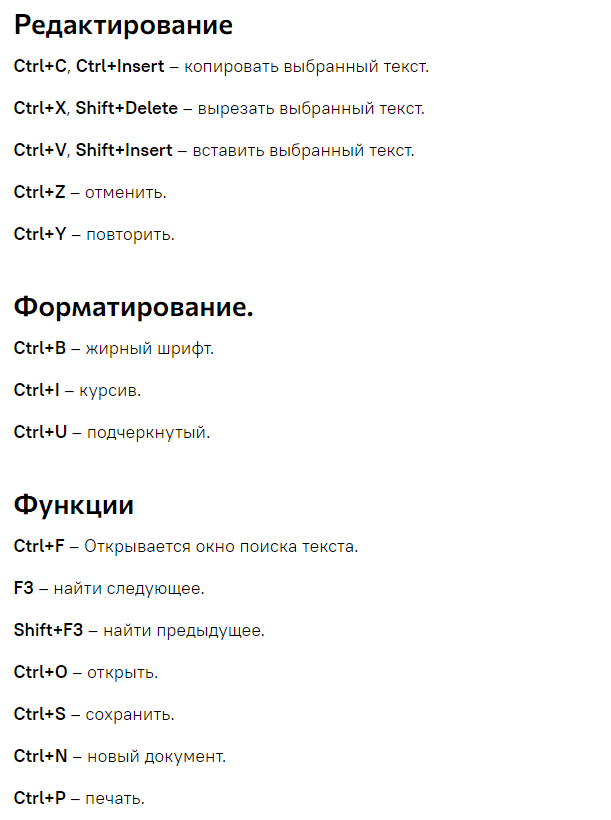
Вторым пунктом, который поможет в работе с Exel, будет список формул для ячеек таблиц, которые позволяют находить наибольшее число, перемножать или складывать значения ячеек и т.д.
Важно! Чтобы формулы работали в ячейке перед ними нужно ставить знак равенства (=) как в примере ниже:
Вот список некоторых из них:
В последнем пункте, пару мелочей, без которых будет надоедать выполнять некоторые действия:
1) Готовые цифры Чтобы каждый раз не вводить фомулу суммы, среднего значения или количества ячеек, то достаточно выделить нужные ячейки и в нижнем левом углу программы отобразятся нужные вам знаения:
2) Протягивание Представьте, что вам нужно извлечь какие-то данные из целого столбца или переписать их в другом виде (например, фамилию с инициалами вместо полных ФИО). Задайте Excel одну ячейку с образцом — что хотите получить. Выделите все ячейки, которые хотите заполнить по образцу, — и нажмите Ctrl+E. И магия случится (ну, в большинстве случаев):
3) Копирование Если вам нужно переместить любую информацию (ячейку, строку, столбец) в Excel, выделите ее и наведите мышку на границу, чтобы изменился указатель. После этого переместите информацию в то место, которое вам нужно. Если необходимо скопировать информацию, сделайте то же самое, но с зажатой клавишей Ctrl.
4) Ускорение ввода сложных слов Если вы часто вводите одни и те же слова, то обрадуетесь, узнав, что в Excel есть автозамена. Она очень похожа на автозамену в смартфонах, поэтому вы сразу поймете, как ей пользоваться. С ее помощью можно заменить повторяющиеся конструкции аббревиатурами. К примеру, Екатерина Петрова — ЕП.